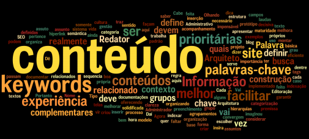
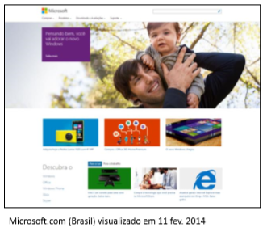

Estratégia de Conteúdo: uma necessidade
Conteúdo na web: o que é?
• Aquilo que está contido ou encerrado em algum recipiente. Assunto, tema, matéria de carta, livro etc.; teor, texto. (Michaellis - Dicionário de Português Online) Atualmente, apesar do conteúdo na web ser dinâmico e chegar ao usuário em diversos formatos (áudio, vídeo, infográficos, etc), a maior parte ainda é textual.
Por que o texto é tão importante?
• O texto está em todos os lugares
– Artigos, postagens de blogs e redes sociais, review de produtos, resenhas, tutoriais, comunicados, guias, etc;
• O texto é diferente
– Vídeo, áudio e imagem não exigem o mesmo cuidado que devemos ter com texto: atualizações
• O texto é pura bagunça
– É o tipo mais complexo de ser produzido, pois possui múltiplos donos e interessados e também é o mais fácil de perder o controle.
Estratégia de Conteúdo
“Estratégia de conteúdo é a prática de planejar criação, entrega e gerência de conteúdo útil e interessante”. HALVORSON, 2010, pág. 30
Jamais se esqueça dos mandamentos da comunicação eficaz!
• Seja adequado
• Seja claro
• Seja preciso
• Seja natural
• Seja leve
• Seja respeitoso
• Seja surpreendente
• Seja dinâmico
• Seja gentil
O problema do conteúdo
PARA O CONTEÚDO DA WEB SER BEM SUCEDIDO, ele precisa satisfazer às necessidades do usuário e aos objetivos principais do negócio. Visite qualquer site e você descobrirá que muito do conteúdo nem remotamente atinge qualquer um desses objetivos e, muitas vezes, é desnecessário, excessivo, irrelevante e incômodo.
Promoção
• O conteúdo da página inicial do site satisfaz o objetivo do negócio?
• E os objetivos do usuário?
• Por quê?
Home Page
• O conteúdo da página inicial do site satisfaz o objetivo do negócio?
• E os objetivos do usuário?
• Por quê?
